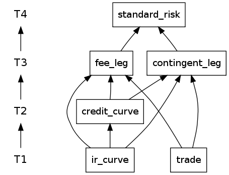
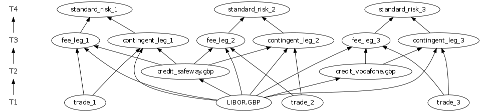

| Application version | 4.0 |
| Application licence | BSD |
| Trad4 version | 4.0 |
| Document version | 4.0 |
| Author | schevans |
| Date | 31-01-12 |
This application is based on the ISDA CDS Standard Model (version 1.7), developed and supported in collaboration with Markit Group Ltd. The original code is available here: http://www.cdsmodel.com/
This application is simply a set of wrappers round the ISDA function calls. This library never intended for this purpose and was actually released as a reference CDS implementation to facilitate the so-called SNAC convention which allowed credit default swaps to be netted in clearing houses after the 2007 crisis. As such, it presents us with a couple of problems in this context - specifically with thread-safety and memory management. This will be discussed below in the section Porting, and is required reading for anyone considering the trad4/imperaflow way.
The model is very similar to that of bond_risk, discussed at length in the trad4 manual. The idea is to get the computationally expensive parts of pricing a trade (in this case the ir and credit curve bootstrapping) to persist so that any objects that depend on this result can re-use them. Also, this being trad4, different parts of the problem can run concurrently.

From the abstract diagram we can see that the two legs are valued concurrently, and their pvs are aggregated in standard_risk.

We can see the advantages of the trad4 approach more clearly in the concrete diagram. This shows one ir_curve (LIBOR.GBP), two credit_curves (Safeway and Vodafone) and three trades against those curves, two against Safeway (trade_1 and trade_2) and one against Vodafone (trade_3). The objects fee_leg_1 and contingent_leg_1 are the fee and contingent legs corresponding to trade_1, and standard_risk_1 is the standard_risk (aka pv) of trade_1. In practise you would have a handfull of ir_curves, hundreds of credit_curves and thousands of trades.
From this we can see that should the Safeway credit_curve move (or 'be marked' in the parlance) then the Safeway curve would need to be re-calculated once, the fee_leg_1, contingent_leg_1, fee_leg_2 and contingent_leg_2 would all run concurrently. Lastly standard_risk_1 and standard_risk_2 would fire, producing the new pvs of these trades.
The t4 files are available here
Now assume the ISDA code is that of an existing library which we want to port to trad4. We have our model and method, now what of the practicalities?
The first issue we'll look at is thread safety - can we safely call a random 3rd party lib through the api and expect it to be thread safe? The answer is a qualified Yes.
The second issue is memory management. The way most of the ISDA api calls behave is to new-off the relevant structure and hands a pointer back to the calculate function. This involves handing over heap management to the 3rd party library which - while not part of the trad4 philosophy until recently - rewards the leap of faith.
So, the first thing you ask when you've just hooked up your library to a trad4 calling framework is: Is this going to be thread-safe? The answer is: There's no such thing as thread-safe code, only code that's thread-safe in a particular threading context.
Let's first look at two different threading contexts that might apply to a 3rd party lib.
In this case your lib might do matrix operations that spin up threads internally to the library and invisible to the api. These must be avoided in a trad4 app for the same reason they should be avoided for grid based HPC - you'll lose control of which threads are doing what.
Solution: Compile/runtime switch to single-thread your lib.
In this case, the architect of the library (or, more likely, multiple architects at various stages of enlightenment) have tried to anticipate our threading context. This usually means mutex locks scattered liberally about whenever a resource looks a bit shared. These mutexes are insidious because they assume every threading context, and in my experience serve none.
Solution: Remove all existing mutex locks before you proceed. Note where they were.
Now, how does any of this apply to us here? The answer is none of it, as this lib makes no claim of thread safety. As discussed above, this is a good thing.
So is jpm_cds thread-safe in a trad4 threading context? The answer is: Why wouldn't it be? By calling the api through a trad4 application you are sure you'll never be reading from and writing to the same object at the same time.
However, there are cases where you will find threading problems in the trad4 context. The first is a practical one from jpm_cds - JpmcdsErrMsg mechanism - which writes to a global buffer which is written to a file on exit. Beyond a garbled log file this isn't a big deal, but it's illustrative.
A more common problem you'll encounter is with any internal caching your lib uses. A common cashing mechanism has at it's heart a hash. Hashes are great and are perfectly thread-safe in a trad4 context, until they are resized, in which case they become neither. Best to replace the hash with a lock-free array of pointers, say about MAX_OBJECTS long? (#defined in trad4.h). Again we're sure of a) the trad4 calling convention where no two objects will be simultaneously read from and written to and b) we know how many objects are expected for this application, and we'll want to keep them in memory so we'll know in advance how big a cache we'll need.
Previously, all memory management was handled by trad4. The space required for each object was described by the t4 files, and these were newed-off and populated (in the case of static and sub) or zeroed (in the case of pub). In fact in older versions of The Manual I explicitly stated that if you feel the need to use the heap you're doing it wrong. This meant any 3rd party lib required re-implementation in terms of trad4. While noble purity has it's place (not that I've ever found it), pragmatism wins every time.
By handing over memory management to a library that already does memory management, you can use that library (almost) unchanged. The almost covers caches and logging and such which might need a tweak, but reusing existing libraries without the requirement of a re-write makes life far more exiting.
Now this takes a fair amount of trust in your 3rd party lib, but if you're already relying on it for memory management you already have that trust.
Now let's look at how this affects jpm_cds. We'll start with the pub section of ir_curve.t4:
pub
TCurve* pTCurve
Here's the calculate function:
if ( ir_curve_pTCurve )
{
free( ir_curve_pTCurve ); // malloced on line 34 of isda_cds_model_c_v1/lib/src/cmemory.c
}
ir_curve_pTCurve = (JpmcdsBuildIRZeroCurve(
ir_curve_baseDate,
ir_curve_st_observables_types,
ir_curve_st_observables_dates,
ir_curve_st_observables_rates,
NUM_RATES,
ir_curve_mmDCC,
ir_curve_fixedSwapFreq,
ir_curve_floatSwapFreq,
ir_curve_fixedSwapDCC,
ir_curve_floatSwapDCC,
ir_curve_badDayConv,
local_holidays));
So you can see JpmcdsBuildIRZeroCurve news off the structure then handed over to the objects to which this r_curve subscribes. If the pointer in question - ir_curve_pTCurve - is pointing to another structure from a previous run it gets deleted.
This may not be the ideal arrangement - object construction and destruction is unnecessary expensive when the object hasn't fundamentally changed, but that's how this 3rd party lib works, so we have to go with it. The point is it works.
The IDSA model only produced pv. As we're already bootstrapping the credit_curve, there's little overhead of also bootstrapping the credit_curve perturbed by +-1bp and using these curves to calculate the cr01 (cr01 being the shift in pv given a +-1bp shift in the credit_curve). This would involve extending the TCurve structure to add:
TRatePt* fArray_p01 TRatePt* fArray_m01
These arrays would hold the credit_curve (for cr01) or ir_curve (for dv01) perturbed up and down by 1bp. Then the legs would also produce pvcrp01, pvcrm01, pvdvp01 and pvdvm01 which would be used in standard_risk to aggregate into trade-level cr01 and dv01.
Likewise we could produce cr01 by gridpoint, by introducing a range of fArrays corresponding to a range of curves perturbed by gridpoint. This would produce a ladder of cr01s. This would come at the expense of a fair bit of RAM, but as the number of curves is relatively low compared to the number of trades this should not present a problem in practice.
To run the application:
1) Download and unpack the distribution3) Source jpm_cds.conf:$ cd trad4_v4_0_full/jpm_cds
4) Start jpm_cds:jpm_cds$ . ./jpm_cds.conf
jpm_cds$ jpm_cds
To increase or decrease the number of threads used (the default is 4), set NUM_THREADS and re-start the application:
$ export NUM_THREADS=64 $ jpm_cds
To update a running system, log into the database:
$ t4db SQL>
And make any required updates. Then instruct the running application to collect these changes by using send_reload.sh:
$ send_reload.sh
Firstly, should you run the precompiler, expect to see a warning about the Makefile under jpm_cds/lib. This is due to the partial nature of the integration between the two systems in the Phase1 release. Please ignore this warning.
Secondly, should you wish to rebuild the ISDA binaries, do so as follows:
jpm_cds$ cd objects/isda_cds_model_c_v1.7/lib/build/lib/linux linux$ make clean linux$ make